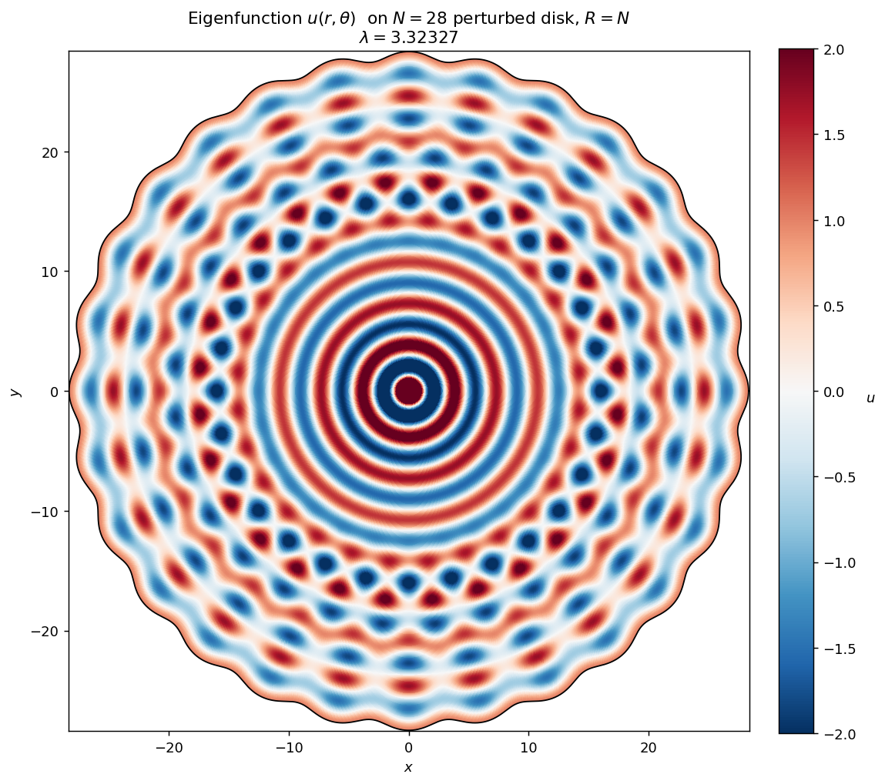

The main theorem and its Pompeiu corollary are certified in Lean 4, with the proof written by GPT 5.6 and published in a GitHub repository.
Abstract
The Schiffer conjecture states that if a smooth domain $Ω\subset \mathbb{R}^n$ admits a Neumann eigenfunction of the Laplacian which is constant at the boundary, then the domain is a ball. It is intimately related to Pompeiu's problem, stating that if a nonzero function integrates zero over any rigid motion of $Ω$, then $Ω$ is a ball. We disprove both conjectures in $\mathbb{R}^2$, constructing infinitely many planar domains $Ω$ which are not balls and satisfy the conditions above. Our domains are $N$-fold symmetric, with $N$ sufficiently large. Our approach is based on a novel strategy of considering a relaxed problem where $N$ can be any real number (which corresponds to the Schiffer problem only when $N$ is a natural number). We then apply bifurcation theory to this relaxed problem, showing that the size of the local bifurcation branch can be taken independently of $N$. This result allows us to conclude that branches starting with $N$ sufficiently close to an integer reach integer values of $N$.
Problem
Schiffer's conjecture says that a smooth domain admitting a Neumann Laplacian eigenfunction that is constant on the boundary must be a ball. The closely related Pompeiu problem asks the analogous question for functions that integrate to zero over all rigid motions of the domain. The work disproves both conjectures in the plane.
Approach
The problem is relaxed so that the symmetry order N may be any real number, and is reformulated on a boundary collar using a Dirichlet-to-Neumann operator. A Crandall–Rabinowitz bifurcation argument with branch size uniform in N is proved, using Debye asymptotics for Bessel functions. Density of crossings near integers then lets branches reach integer N. A Lean 4 certification of the main theorem and corollary was written by GPT 5.6 from an early draft. The Lean statement of the Pompeiu problem comes from DeepMind's Formal Conjectures repository.
Results
Infinitely many smooth, simply connected, star-shaped, N-fold symmetric planar non-ball domains admit Schiffer solutions. These domains give counterexamples to both the Schiffer and Pompeiu conjectures, and the results are machine-checked in Lean.

Figure 1 . Plot of a Schiffer counterexample of N -fold symmetry with N=28 , obtained by perturbing from N_{\ast}=28.026\ldots , from \rho_{\star}=j_{1,16}=51.0435\ldots The color scale is truncated to [-2,2] for visualization purposes, although \|u\|_{L^{\infty}(\Omega)}\approx 8.014.